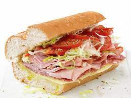

Italian Sandiwch

A classic italian sandwich on a sub-roll with heaps of vegetables and cold cuts
The italian-style sandwich has been around forever, and is incredibly popular as a quick meal to grab
on a lunch break or on the way home from a long shift at work. The sandwich has become a staple of corporate meetings
and famliy events alike, so lets put together a fantastic sandwich that reinvents the class we all know!
Ingredients
- Sub roll
- Tomatoes
- Bell Peppers
- Black Olives
- Lettuce
- Oil
- Vinegar
- Cold cuts of your choice!
Instructions
- Dice 1 tomatoes, 1 bell peppers, and 1/4 cup of olives finely and toss in a bowl with 2 tablespoons of both oil and vinegar.
- If necessary, cut cold cuts to fit inside of the sub roll.
- Split the sub roll and lightly drizzle oil and vinegar onto one side
- Place a layer of lettuce onto the roll.
- Use a spoon to put the diced vegetables onto the lettuce.
- Lastly, put your choice of cold cuts inside the roll.
- Enjoy!